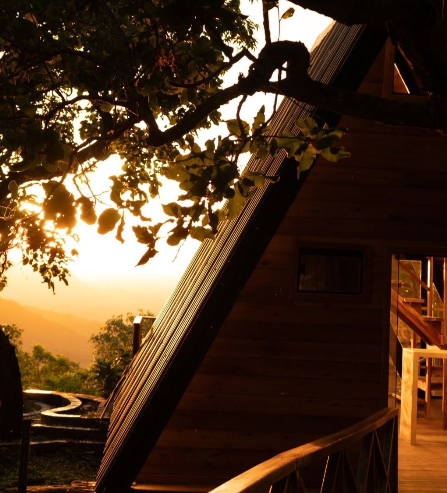
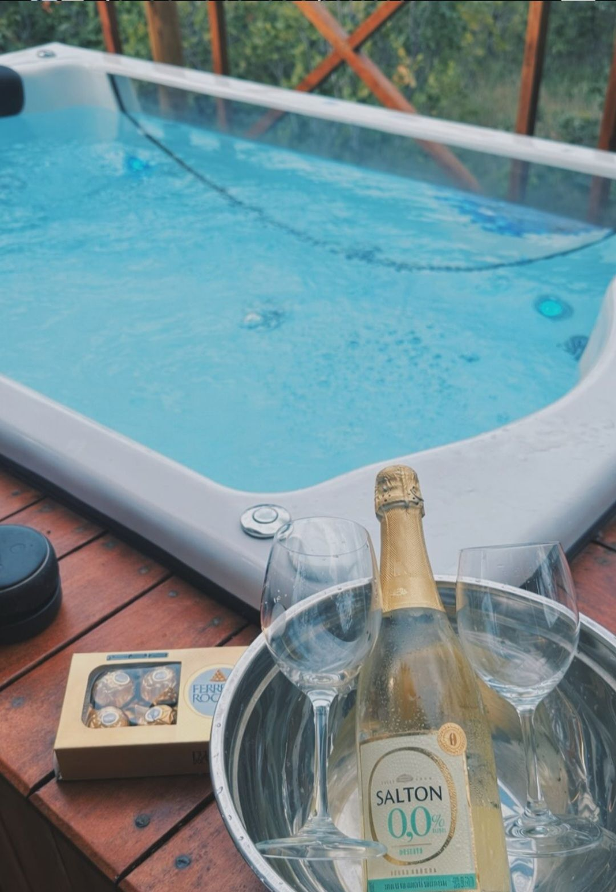

Cavalcante · Chapada dos Veadeiros · GO
Sinta a Chapada acordar
Um chalé em A no meio do cerrado, com hidromassagem no deck, vista para a serra e as cachoeiras de Cavalcante ao redor.
A pousada
O Nature Senses Chapadinha fica na estrada entre Cavalcante e Colinas do Sul, no lado norte da Chapada dos Veadeiros. Aqui o dia começa com o canto dos pássaros e termina com a Via Láctea sobre o chalé. Um lugar feito para desacelerar e usar os cinco sentidos.
Chalé privativo com hidromassagem e churrasqueira no deck, jardim, Wi‑Fi e estacionamento gratuitos. Perto do Território Kalunga e do Parque Nacional.

Hospedagem
Chalé em A com fachada de vidro, cercado de árvores do cerrado e de frente para a serra. Por dentro, sala com sofá e escada para o mezanino. Do lado de fora, o deck com hidromassagem.
Experiências
Nature Senses quer dizer isso: viver a natureza por inteiro. Passe o mouse ou toque em cada sentido.
O nascer do sol sobre as serras e a Via Láctea inteira à noite, sem poluição luminosa.
O barulho das cachoeiras, o vento no capim e o canto dos pássaros do cerrado ao amanhecer.
A água fria e cristalina dos poços e a hidromassagem quente no fim do dia.
O cheiro de terra molhada do cerrado depois da chuva e das flores do jardim.
Os frutos do cerrado, como pequi, baru e cagaita, na cozinha regional de Cavalcante.
Arredores
Cavalcante é a porta de entrada para as cachoeiras do Território Kalunga, o maior território quilombola do Brasil. Contrate guias locais: além de obrigatórios em vários atrativos, eles contam a história do lugar.
@naturesenseschapadinha
Avaliações
Notas públicas dadas pelos hóspedes nas plataformas de reserva.
Como chegar
Reservas
Escolha as datas e monte sua mensagem. Você envia direto para a pousada e recebe a resposta da equipe.